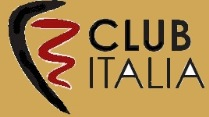

Фотографии

|

FIAT S.p.A. (акроним от итал. Fabbrica Italiana Automobili Torino, русск.
Итальянская автомобильная фабрика Турина) — итальянская компания-производитель автомобилей, двигателей, финансовое и
производственное объединение. Штаб-квартира расположена в Турине (регион Пьемонт). В последнее время концерн носил
название FIAT Group. С 1 января 2011 года FIAT Group разделился на два концерна: FIAT SpA и FIAT Industrial.
Передовая организация
Главный офис исследовательского центра FIAT, основанного в 1976 году, находится в итальянском городе Orbassano, рядом с
Турином. Здесь проводятся исследования двигателей, транспортных средств, электронных систем, производственных процессов,
новых технологий и методов управления. Исследовательский центр FIAT приобрел известность благодаря своим достижениям в
области технологий и получил многочисленные международные награды, такие как: премия "Economist" за новаторство и
разработку технологии дизельного двигателя Common Rail – 2002 год, "Legambiente 2002" - за метановый двигатель на
смешанном топливе и технологическая премия "Ferrari" «Лучшему техническому партнеру года».Одним из главных достижений FIAT
особо стоит отметить разработку 2002 года - двигатель второго поколения "Multijet", пришедший на смену Common Rail и
обладающий несоизмеримо большей производительностью. В настоящее время он надежно служит в автомобилях FIAT: Panda, Stilo,
Punto и Idea.
|

На главную
|